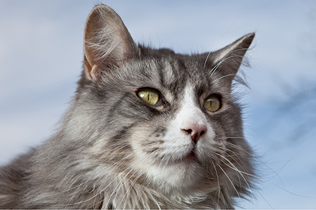

Description

Sed eget auctor orci. Quisque ex mi, eleifend sit amet tellus ac, rutrum condimentum neque. Quisque nunc odio, aliquam fermentum venenatis a, consequat at lectus. Mauris vel eros vestibulum, consequat nisi sit amet, porttitor neque. Phasellus quis euismod ante. Sed nec luctus velit. Nullam ac posuere lacus, ut scelerisque elit. Quisque varius nunc a mattis condimentum.
Etiam eu erat quis diam lobortis finibus. Vestibulum sodales nisl fermentum vulputate cursus. Integer eget ligula orci. Pellentesque habitant morbi tristique senectus et netus et malesuada fames ac turpis egestas. Morbi condimentum molestie ligula a pellentesque. Mauris placerat dolor vel nisi laoreet, eu condimentum nisl consequat. Proin ante tellus, egestas fringilla pellentesque vel, semper ut diam. Fusce cursus odio at vulputate ullamcorper. Cras fermentum ante vitae ante aliquet tristique ut non diam. Pellentesque condimentum aliquet ipsum ut finibus. Nullam tincidunt mi sit amet metus viverra, a vulputate sapien feugiat.
Nam sodales efficitur ex vitae feugiat. Suspendisse potenti. Praesent in nibh a nulla efficitur porttitor a rutrum magna. Ut tempor risus placerat pellentesque ullamcorper. Donec tellus felis, porttitor eget lobortis a, fringilla ut est. Donec pretium erat eu ex consequat, sit amet blandit purus blandit. Pellentesque habitant morbi tristique senectus et netus et malesuada fames ac turpis egestas. Etiam nec sem mauris.